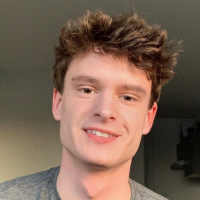
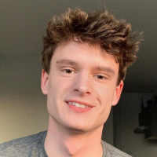

About
Deep learning II is taught in the MSc program in Artificial Intelligence of the University of Amsterdam. In this course we study the theory of deep learning, namely of modern, multi-layered neural networks trained on big data. The course is coordinated by Assistant Professors Efstratios Gavves and Wilker Aziz Fereira.

And the lectures for the course are: Erik Bekkers, Eric Nalisnick, Eric Marcus, Sara Magliacane
Jonas Teuwen, Andrew Yates, Wilker Aziz Ferreira and Stratis Gaves.

The Teaching Assistants (TAs) are:
Christos Athanasiadis, Ilze Amanda Auzina, Leonard Bereska, Gabriele Cesa, Evgenii Egorov, Bryan Eikema, Cyril Hsu, David Knigge, Yongtuo Liu, Thong Nguyen, Frederik Nolte, Samuel Papa, Adeel Pervez, Riccardo Valperga, Haochen Wang


 
